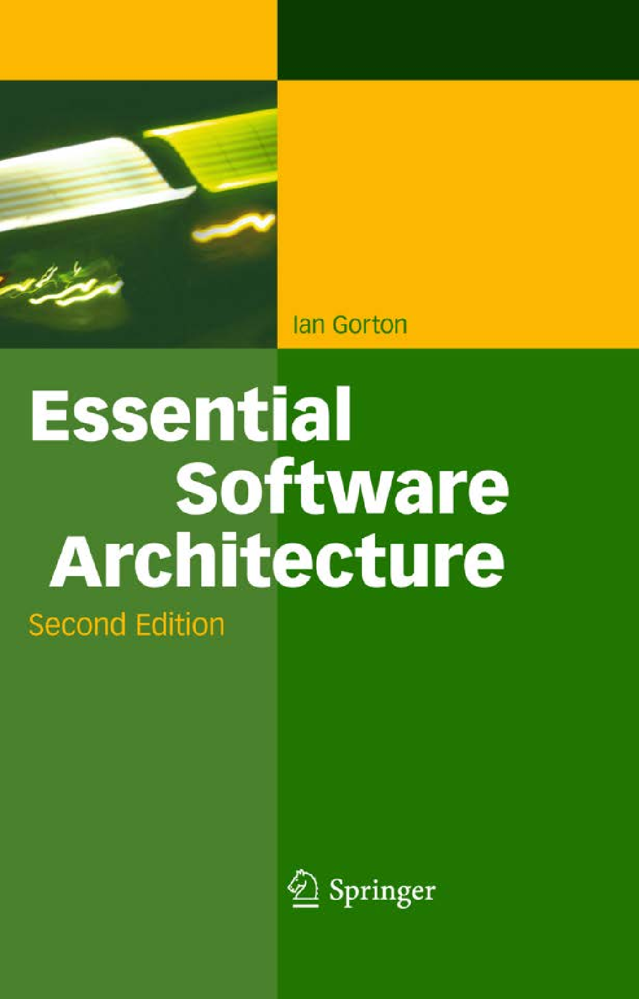

Instructor: Dr. Ying Shen (…Ú”®) (yingshen@tongji.edu.cn)
TA: TBA
Evaluation: assignments (50 points), presentation (20 points), software architecture documents(20 points), participation (10 points)
Schedule |
Slides |
Related Materials |
Week 1 |
|
|
Week 1, 2 |
1. Chapter 1 - 2 from SA in practices 2. Chapter 1 from Software architecture: perspectives on an emerging discipline 3. Software architecture of the Arcade Game Maker (AGM) product line |
|
Week 3 |
1. Chapter 4 from SA in practices 2. Chapter 2 - 3 from Essential software architecture |
|
Week 4, 5 |
1. Chapter 5 and 7 from SA in practices 2. J. Scott and R. Kazman: Realizing and Refining Architectural Tactics: Availability, Technical report, 2009 3. F. Bachmann, L. Bass and R. Nord: Modifiability Tactics, Technical report, 2007 |
|
Week 5, 6 |
|
|
Week 7 |
|
|
Week 8 |
|
|
Week 9 |
|
1. Compress all files into a .rar file whose name is composed of student name and ID.
2. All the documents you hand in should be in English.
Program (10 points)
Report (40 points)
Presentation (20 points, 20 min)
As you have been given the requirements of the Advertisement Management System, you should finish the first iteration of ADD method applied to this system.
Your presentation should reveal the process of the first iteration of ADD method.
You can prepare your presentation materials following the way as shown in the slide (Garage Door Opener System).
In detail, your presentation should consist of the following parts:
Software architecture document (20 points)
Design a software architecture for your project and document it following the template given in Software architecture of the Arcade Game Maker (AGM) product line.
Len Bass, Paul Clements, and Rick Kazman Software Architecture in Practice, Third Edition Addison-Wesley, 2012 |
||
Mary Shaw and David Garlan Software Architecture: Perspectives on an emerging discipline Prentice Hall, 1996 |
|  | Ian Gorton Essential Software Architecture, Second Edition Springer, 2011 |
Created on: Feb. 11, 2015